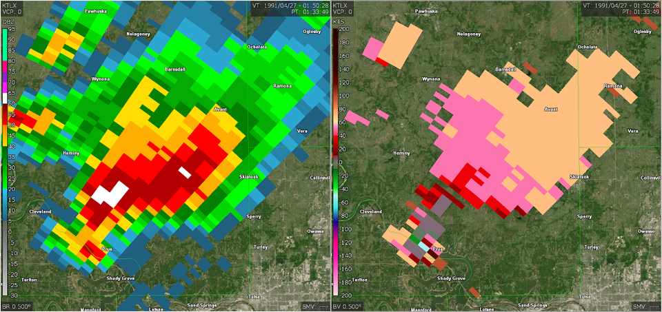
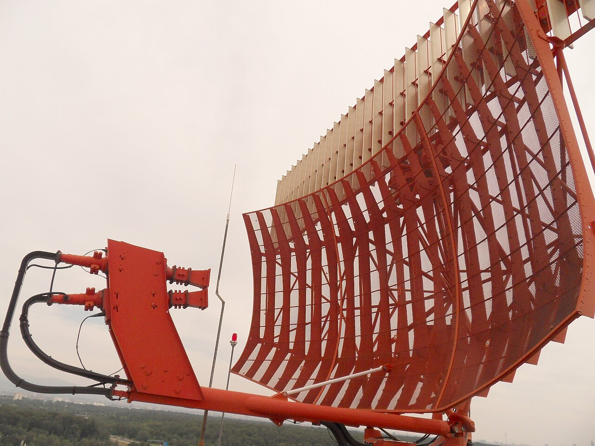

Radar's Lasting Impact
Radar continued to change after World War II. Weather researchers found that rain caused echoes on radar screens. They developed this into a way to locate storms. Doppler radar later helped forecasters study motion inside storms, including wind patterns and possible rotation.



These changes made radar important to people outside the military. Better storm information helps forecasters warn communities about dangerous weather. The same basic idea of receiving reflected radio waves could now help people prepare for a different kind of threat.
Radar also became important in aviation and cars. It helps aircraft navigate and can help drivers keep a safe distance from other vehicles. These uses show how a technology developed for defense became part of transportation and daily life.



Researchers are still studying new forms of radar. Passive radar uses signals already in the environment, such as radio or television broadcasts, instead of sending out its own signal. This shows that radar's development did not stop with its wartime uses.
Radar matters in history because it changed how people found danger and responded to it. Its story connects scientific experiments with government support and teamwork. Its lasting impact also shows that an innovation can serve many purposes as people find new ways to use it.